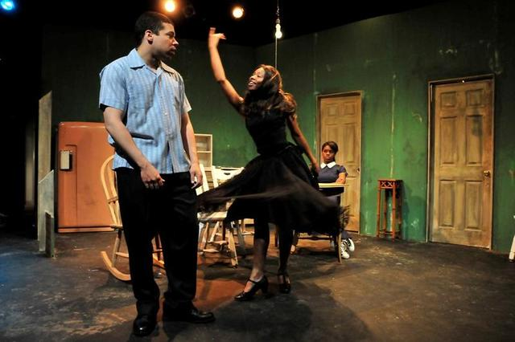

A very kind review from RS Bailey on Curve Wire.
“Tiger Tiger Burning Bright” is well-written and intelligent play with a genuine feel for the underside of life and the everyday people it affects. Sam Nickens has directed it with a natural fluidity and brought forth some monumental performances from his cast.
Damien Burke brings a dark internal lure to Clarence.
Come see for yourself, Thursday, Friday, and Saturday at 8, Sundays at 3 at the Stella Adler Theatre in Hollywood. For tickets and information go to plays411.net/tiger or call 323-960-7740.
